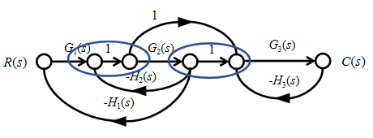

控制系统的图示法——信号流图与梅森公式
本章主要介绍控制系统的另一种图示方法——信号流图，以及用于复杂系统简化的梅森公式。信号流图提供了分析复杂多回路系统的有效工具。
本章学习目标
- 掌握信号流图的基本概念与表示方法
- 理解梅森公式的各个组成部分
- 学会应用梅森公式求解复杂系统的传递函数
- 掌握信号流图与结构框图的转换方法
- 理解梅森公式的应用步骤和技巧
章节内容概述
2.3.1 信号流图的基本概念
2.3.2 信号流图与结构框图的转换
2.3.3 梅森公式的定义与组成
2.3.4 梅森公式的应用步骤
2.3.5 示例与实践练习
笔记说明：本笔记基于PPT内容整理，补充了必要的公式推导和解释说明，确保内容完整性。
信号流图的基本概念
信号流图定义
信号流图（Signal-Flow Graphs）：描述系统结构的一种图形表示方法，要素为分支和节点，是结构框图的替代形式。
基本要素
节点（Nodes）
- 表示信号/变量
- 用圆圈表示
- 节点表示的信号为流入该节点的信号代数和
分支（Branches）
- 有向线段
- 表示子系统/信号流
- 标注方向和增益（传递函数）
信号流图示例
R₁(s) → [G₁(s)] → C₁(s)
↓
R₂(s) → [G₂(s)] → C₂(s)
↓
R₃(s) → [G₃(s)] → C₃(s)
节点特性
- 信号代数和：节点表示的信号为所有流入该节点信号的代数和
- 单流出/单流入：一般仅包含一个流出（比较点）或一个流入（引出点）
- 信号分配：从节点流出的信号等于该节点表示的信号
信号流图与结构框图的转换
结构框图到信号流图的转换
求和点的转换
结构框图中的求和点：
R₁(s) + → ⊕ → C(s)
R₂(s) +↗
R₃(s) -↗
转换为信号流图：
R₁(s) → [1] → N → [1] → C(s)
R₂(s) → [1] ↗
R₃(s) → [-1] ↗
其中N为中间节点。
引出点的转换
结构框图中的引出点：
R(s) → · → R(s)
↓
R(s)
转换为信号流图：
R(s) → N → [1] → C₁(s)
↓ [1]
C₂(s)
转换规则总结
- 结构框图方框 → 信号流图分支：传递函数作为分支增益
- 结构框图求和点 → 信号流图节点：需引入中间节点
- 结构框图引出点 → 信号流图分支：增益为1的分支
- 信号方向保持：保持原有的信号传递方向

梅森公式解决的问题
对于复杂的多回路系统，传统的框图简化方法可能非常繁琐。梅森公式提供了一种系统化的方法，可以直接从信号流图或结构框图求出输入到输出的传递函数。
关键概念定义
1. 前向通路/通路（Forward Path）
- 定义：从输入节点到输出节点且每个节点只通过一次的信号流
- 数量：表示前向通路的个数
- 序号：表示第个通路
2. 回路（Loop）
- 定义：起始节点与终止节点相同且每个节点只通过一次的信号流
- 特性：闭合的信号路径
3. 非接触回路（Nontouching Loops）
- 定义：没有共同节点的回路
- 分类：
- 单回路：单个回路
- 双非接触回路：两个互不接触的回路
- 三非接触回路：三个互不接触的回路
- 以此类推
4. 增益定义
- 通路增益 ：第个通路中所有分支上增益（传递函数）的乘积
- 回路增益 ：第个回路中所有分支上增益的乘积（含求和点处的符号）
- 非接触回路增益：两个、三个等非接触的回路增益的乘积
梅森公式的数学表达式
梅森公式用于计算从输入到输出的传递函数：
其中：
1. 特征行列式
- ：所有单个回路增益之和
- ：所有两两非接触回路增益乘积之和
- ：所有三三非接触回路增益乘积之和
- 以此类推，符号交替
2. 第条通路的余子式
- 定义：从中删除与第条前向通路接触的所有回路后剩余的部分
- 计算：删除与通路有共同节点的所有回路后，按相同规则计算
梅森公式的应用步骤
系统化应用流程
Step 01：识别回路并计算$\Delta(s)路
- 计算每个回路的增益
- 识别非接触回路（单、双、三...）
- 计算特征行列式：
Step 02：识别前向通路
- 找出所有从输入到输出的前向通路
- 记录前向通路个数
- 令当前通路序号
Step 03：计算当前通路增益和余子式
- 计算当前前向通路增益
- 识别与当前通路无接触的回路
- 计算余子式
Step 04：累加贡献
- 计算
- 累加到分子中
Step 05：检查是否完成
- 如果，令，返回Step 03
- 如果，继续下一步
Step 06：计算最终传递函数
注意事项
- 回路识别要全面：不能遗漏任何回路
- 非接触判断要准确：回路间无共同节点才算非接触
- 符号处理要正确：注意求和点处的符号影响回路增益
- 通路接触判断：通路与回路有共同节点即为接触
2.3.5 梅森公式的详细推导与解释
特征行列式的物理意义
特征行列式反映了系统的反馈结构：
- "1"：表示直通项
- ""：所有单个回路的负反馈作用
- ""：两个非接触回路同时作用的叠加效应
- 更高阶项：多个非接触回路共同作用的效应
余子式的物理意义
表示在考虑第条通路时，系统中仍然有效的反馈结构。删除与通路接触的回路是因为这些回路会影响该通路的信号传递。
公式的直观理解
梅森公式可以理解为：系统总响应等于各前向通路贡献的加权和，权重考虑了该通路不受影响的反馈结构。
示例分析
示例 2.3.6：基本系统分析
考虑系统：
R(s) → [G₁] → ⊕ → [G₂] → C(s)
↑ (-) ↑
└──[H₁]←───┘
分析步骤：
-
识别回路：
- 回路1：，增益（负反馈）
-
计算：
-
识别前向通路：
- 通路1：，增益
-
计算余子式：
- 通路1与回路1接触，
-
应用梅森公式：
示例 2.3.6：复杂多回路系统
考虑更复杂的系统：
R(s) → [G₁] → [G₂] → [G₃] → C(s)
↑ ↑ ↑
│ │ │
├─[H₁]←┤ │
│ └─[H₂]←┤
└──────[H₃]←──┘
分析步骤：
-
识别回路：
- 回路1：
- 回路2：
- 回路3：
-
识别非接触回路：
- 回路1和回路2是非接触的
- 其他回路都相互接触
-
计算：
其中：
-
识别前向通路：
- 通路1：，
-
计算余子式：
- 通路1与所有回路都接触，
-
最终传递函数：
信号流图的规范形式
规范信号流图的特点
- 单输入单输出：明确指定输入节点和输出节点
- 无直接连接：输入输出间无直接分支
- 节点清晰：每个节点有明确的物理意义
- 分支完整：所有传递关系都用分支表示
规范化步骤
- 引入输入节点：如果系统有多个输入，引入参考节点
- 引入输出节点：明确指定输出节点
- 处理求和点：将求和点转换为节点形式
- 处理引出点：将引出点转换为分支形式
- 简化冗余：合并串联分支，简化结构
梅森公式的优势与局限
优势
- 系统化：提供标准化的求解步骤
- 高效：对于复杂多回路系统，比框图简化更高效
- 全面：自动考虑所有前向通路和反馈回路
- 直观：公式有明确的物理意义
局限
- 计算复杂：对于非常多回路的系统，计算可能繁琐
- 容易遗漏：回路和前向通路识别可能遗漏
- 符号处理：求和点符号容易出错
- 适用性：主要适用于线性时不变系统
适用场景
- 多回路系统：回路数量较多的系统
- 复杂连接：有交叉反馈的系统
- 非接触回路：存在非接触回路的系统
- 快速分析：需要快速得到传递函数的场合
小结与总结
核心概念总结
- 信号流图：节点和分支构成的系统图形表示
- 梅森公式：求解复杂系统传递函数的系统化方法
- 关键要素：
- 前向通路和通路增益
- 回路和回路增益
- 非接触回路
- 特征行列式和余子式
重要公式回顾
梅森公式：
特征行列式：
学习要点
- 掌握转换：结构框图与信号流图的相互转换
- 熟练识别：快速准确识别回路和前向通路
- 正确计算：按照步骤系统化计算
- 理解物理意义：理解公式各项的物理含义
工程应用价值
- 控制系统分析：分析复杂控制系统的稳定性
- 电路设计：分析多回路电路的传递特性
- 机械系统：分析多自由度机械系统的动态特性
- 滤波器设计：分析多级滤波器的频率响应
梅森公式是分析复杂线性系统的重要工具，掌握其原理和应用方法对于控制系统工程师至关重要。通过大量练习，可以熟练应用梅森公式解决实际工程问题。